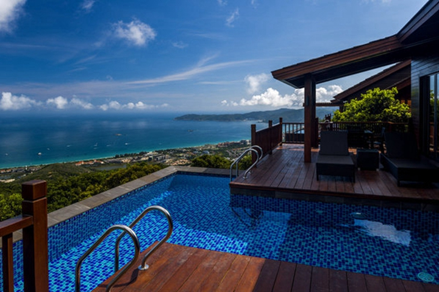
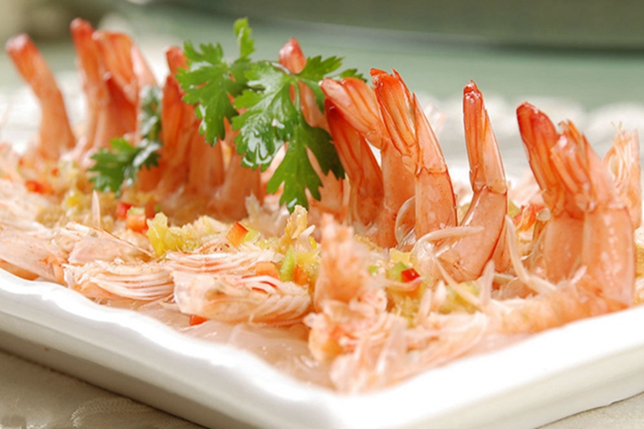

-
千风万景中遇见你 - 首页
- 精选
- 邂逅
-

- 消息

目的地>中国>三亚
San Ya


三亚

三亚天气
晴 17℃~22℃
146人来过这里
26篇旅游日志
26篇旅游日志
景点介绍
三亚市位于海南岛最南端，是中国最南部的滨海旅游城市。因三亚河（古名临川水）由三亚东西河至此会合，成“丫”字形，故取名“三亚”。同时它也是是一个黎、苗、回、汉多民族聚居的地区。 三亚拥有被无数城市嫉妒的清新空气，柔和海滩。在沙滩悠闲散步、沐浴傍晚温和阳光，在海边玩耍，在雨林里面呼吸健康，欣赏自然奇观，一切都是那么令人享受。
三亚连续四次成为举办世界小姐总决赛的所在地，同时世界大力士锦标赛，世界比基尼小姐大赛等等国际大赛都因为三亚迷人的热带海滨风光而选择了它。毫无疑问，三亚是中国不可多得的能成为世界顶级度假圣地的城市。 习惯了都市快节奏生活的人们，纷纷涌入这座海滨小城，从而带来了许多城市管理问题。
旅游资源的丰富与旅游服务之间的矛盾，导致各种宰客现象层出不穷，这让不少到过三亚的人为之不满。
但是这一切都会慢慢改变，因为没有什么会阻挡三亚成为国际度假圣地的脚步。
景点美照


- 2016-2017© 遇见网® yujian.com All rights reserved.Version v1.00
遇见网为旅行爱好者提供记录自己旅途见闻并展示的个人空间。